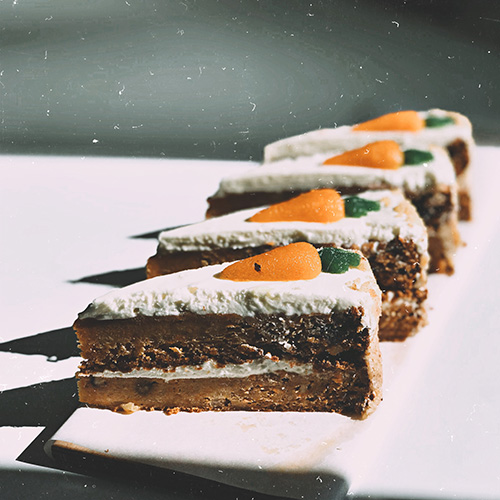

Deze cake wordt bereid met geraspte wortels, die een natuurlijke
zoetheid en een zachte consistentie aan het gebak geven. De toevoeging
van specerijen zoals kaneel en nootmuskaat versterkt de diepte van de
smaak.

Recept
Verwarm de oven voor op 175°C.
Meng de droge ingrediënten in een kom.
Klop de eieren en suiker in een andere kom tot licht en luchtig.
Voeg olie en vanille-extract toe aan het eimengsel.
Roer de droge ingrediënten geleidelijk door het natte mengsel.
Voeg geraspte wortelen en gehakte noten (optioneel) toe en meng
goed.
Giet het beslag in een ingevette en met bloem bestoven bakvorm.
Bak gedurende 45-50 minuten of tot een tandenstoker er schoon
uitkomt.
Laat de cake afkoelen in de vorm voordat je hem uit de vorm haalt.
Eventueel glazuur maken en over de afgekoelde cake smeren.